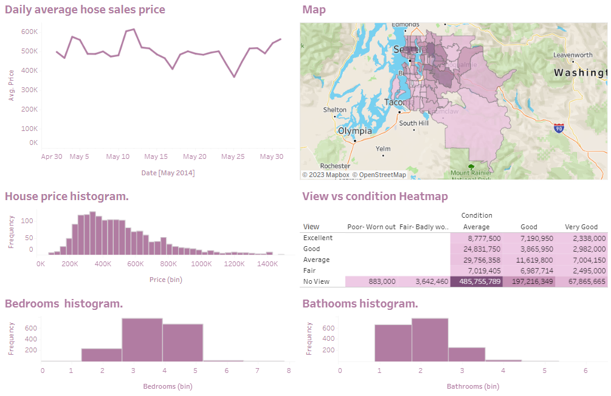

Washington State Housing Price Insights Dashboard

Welcome to the 'House Data' Dashboard, a comprehensive visualization of housing price trends in Washington coundy spanning the period from May 2014 to May 2015. This interactive dashboard provides a detailed analysis of crucial factors influencing house prices, such as the number of bedrooms, bathrooms, square footage of living space, lot sizes, views, and overall condition.
Through Tableau, I meticulously crafted this dashboard to offer an intuitive and informative platform for exploring the dynamics behind housing prices in the specified timeframe. Each element within the dataset has been carefully considered and visualized to provide an insightful understanding of how these attributes impact house prices across different regions of Washington.
Whether you're a real estate enthusiast, industry professional, or data aficionado, this dashboard allows you to interactively dissect and comprehend the correlations between house prices and various features. Dive into the visual representations, compare trends, and extract meaningful insights to gain a deeper understanding of the housing market in Washington State during this period
This is a preview of the dashboard. The displayed view is an image providing a glimpse of the comprehensive data visualization. To interact with the complete dashboard and explore detailed insights, please access the live version by clicking below
